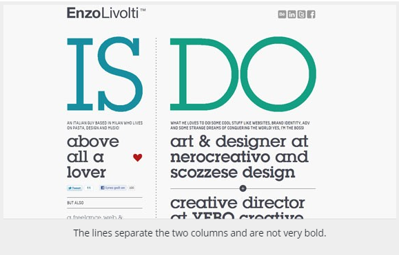
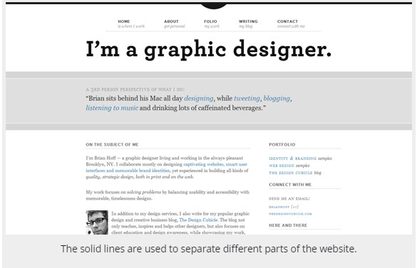
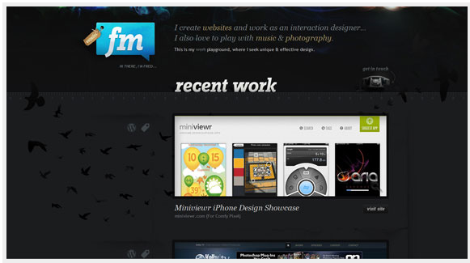
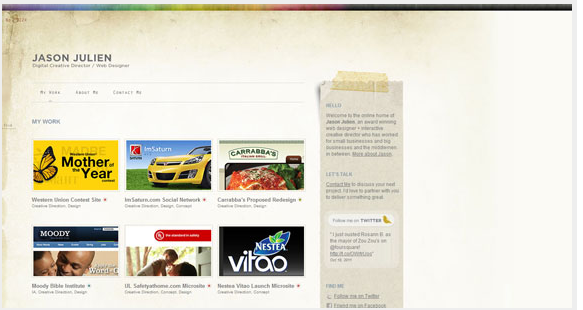
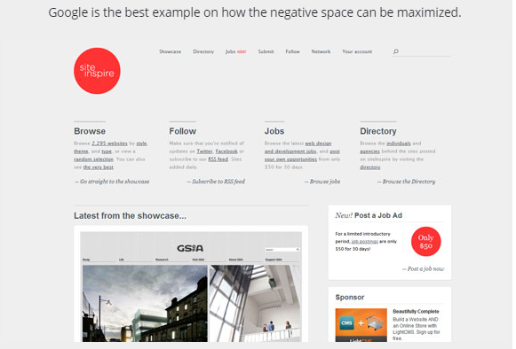

There are in total six elements of a design which you need to be aware of: the line, the shape, the color, the texture, the value and the space.
The line is usually present in every design, even if it is a solid border of 1px or a dotted one of 5px. Every website has lines, but the minimalistic style which became more popular in the past couple of years tries to erase the lines from the layouts, or at least to decrease the use of them.
The lines can be long, red, straight, thin, blue, dashed, short, black or curved, they are all into the same category. They are most of the time used for delimitation between different sections of a design, or are used to direct a viewer’s vision in a specific direction.
The lines can create different effects and visual impact. While a thick, bold line draws attention because of its visual power, the thin lines tend to go the other way. The color has an impact too, dark colors are easier to see and draw more attention than light or pale colors.
And this is not all. The style of a line can also influence the way the user sees it. This style can easily be defined through CSS and can be solid, dotted and dashed among others. The solid lines have a different impact than the dotted ones, because they are more imposing.
The minimalistic style which I’ve talked about earlier uses either less solid lines or more curved lines, because they give a dynamic and fluid look to a design, which is also the purpose of the style. They indicate energy, keep the user interested and, if combined with illustration, are very powerful to the human eye.
Many years ago solid lines were very popular because they determined the style of the design: rigid, solid and organized. The web changed in the past years and this style is not very popular anymore, especially for designers’ portfolios and other pages with a strong need of a personal touch.
 The shape, or the form, is the second most used element of a web design. They are actually lines combined in different shapes. The forms are still popular and this is because if there is something that needs to stand out, forms are one of the ways to do it. There can be circles, squares, rectangles, triangles or any other abstract shape; most of the designs include at least one of these. Minimalistic designs use it a lot, because they are often based on illustrations and drawings. The old style of designing websites included shapes too, so they remained popular throughout the time and will probably continue being like that. Like lines, shapes are also associated by the human mind with different movements. For example, circles are associated with movement and nature, while squares are often seen as structured, basic designs. Just like with the lines, the color, style, background or texture of a shape can totally change the viewer’s perception.
The textures were not very popular a couple of years ago, but they tend to become more and more used. They replaced (or compete with, if we can call it a competition) the single-colored backgrounds. Textures can look similar to solid background colors, but if they are analyzed closer, small but effective differences can be noticed. Texture styles include paper, stone, concrete, brick, fabric and natural elements, among flat or smooth colors. Textures can also be subtle or pronounced and can be used sparingly or liberally. They work with pretty much everything. Even if they do not seem important, the textures can totally change a website and offer a totally different visual impact.
The color may even be the most important element of a design, because it offers the most powerful visual impact at a single glance. Color is obvious and does not need basic graphic skills to be noticed. While lines and shapes mean the same thing as in the reality, only at a little more profound level, the color means exactly the same thing as in the nature. Color creates emotions – red is passionate, blue is calm, green is natural. Even if you don’t realize this, colors have a clear effect on your mind. Studies have been done and a person who lives in a red environment has a higher heartbeat and pulse than a person living in a blue environment. The human brain sees this and influences the rest of the body. Therefore color theory is very important to know, because not many designers can call themselves experts in this field. Being a master of colors might make the difference between a good design and a stunning one.
I did not specify value above, even if it is closely related to color, because value is more general and represents how dark or light a design is. Value has a lot to do with mood too, only at a more profound level. Understanding colors will take you close to perfection, but knowing how value works will take you beyond this. Lighter designs offer a different impact and feeling than the dark ones and you need an expert eye to notice differences and decide which one is the best.
The space and how it is used is crucially important in design. Lately the “white space” (also called negative space) became used widely because it allows the human eye to read easier.
For whoever is not familiar with the term “white space”, it does not mean precisely space filled with white, but every area of the design which is only filled with the background color. You can see several examples below to better understand the concept.
If there is a lot of negative space in your web design, it offers light and an open feeling. The lack of white space will turn your design into an old-fashioned, cluttered one. The space has also a lot to do with how the design is perceived by the human eye.
Even if I said the color is maybe the most important element of a design, the space is definitely present in the top, because it is also very easy to notice by the untrained eye. It can turn a design to your advantage and get the best out of your layout.
These are the basic elements a beginner graphic designer should know about. Having this knowledge will allow you to think more user-focused and design with a better style. However, this is not everything. Let’s talk about design principles.
The second was about the Principles of Graphic Design and we took a look at concepts such as Balance, Dominance, Contrast and Harmony. Today we go a bit more in-depth with the last article and talk about the composition and its basic elements.